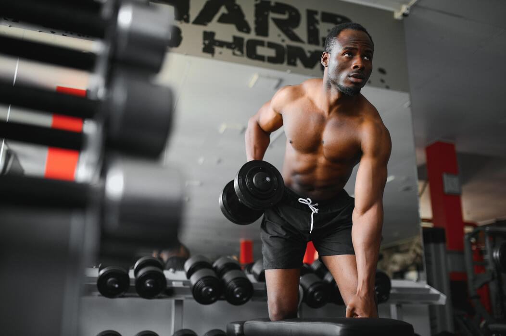

Introduction to Training

Training is an essential part of improving performance in sports. It helps athletes develop strength, endurance, speed, and flexibility.
A balanced training routine includes both strength training and cardio exercises. These help improve overall fitness and reduce the risk of injuries.
Strength Training
Strength training focuses on building muscle and increasing physical power. It is important for athletes who want to improve performance in sports such as football and basketball.
Regular strength training can help improve posture, increase bone strength, and boost overall physical performance.
Benefits of Strength Training
- Builds muscle strength
- Improves body posture
- Increases bone density
- Reduces risk of injury
- Boosts athletic performance
Cardio Training
Cardio training focuses on improving heart and lung health. It includes activities such as running, cycling, and swimming.
Cardio exercises help increase stamina and endurance, which are important for sports performance.
Benefits of Cardio Training
- Improves heart health
- Increases stamina
- Burns calories
- Helps with weight management
- Improves overall fitness
Weekly Training Plan
A structured training plan helps athletes stay consistent and achieve their fitness goals.
| Day | Activity | Focus |
|---|---|---|
| Monday | Strength Training | Upper Body |
| Wednesday | Cardio | Endurance |
| Friday | Strength Training | Lower Body |
| Saturday | Light Cardio | Recovery |
Types of Exercises
- Running
- Weight lifting
- Swimming
- Cycling
- Stretching
Learn More About Fitness
For more training tips and fitness advice, visit Healthline Fitness.